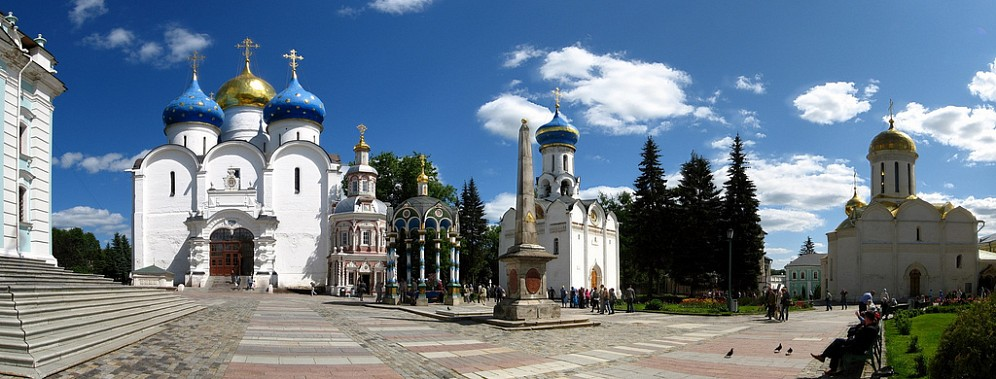
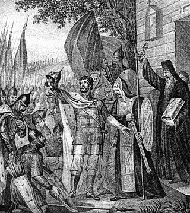
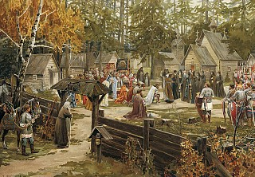

Троице-Сергиева лавра
-

- Панорама Троице-Сергиевой Лавры
Свято-Троицкая Сергиева Лавра - крупнейший православный монастырь России, основанный в далёком 1337-ом году святым преподобным и величайшим подвижником земли Русской - Сергием Радонежским. Монастырь не единожды был окружён врагами - после того, как он был сожжён и разграблен в 1408-ом году татарским ханом Едигеем, монастырь мужественно выстоял 16-месячную осаду польско-литовских интервентов в Смутное время, а так же отразил атаки войск польского королевича Владислава в 1618-ом году. Статус лавры монастырь приобрёл в 1742-ом году, посредством императорского указа Елизаветы Петровны. Ансамбль Троице-Сергиевой лавры включает в себя более 50 зданий различного назначения. Самое старое из них - Троицкий собор из белого камня, построенный в 1422-ом году.
История Свято-Троицкой Сергиевой Лавры
-

- Гравюра Бориса Чорикова. Сергей Радонежский
(справа, держа в левой руке Евангелие) крестом
благословляет великого князя Дмитрия Донского
перед Куликовской битвой
-

- Эрнест Лисснер. «Троице-Сергиева лавра»
Судьба Лавры тесно переплетена с именем Сергия Радонежского. Подвижник перенес идею общего монастырского служения из Киевской Руси севернее, в Московское княжество. В 1337 году Варфоломей, будущий Сергий, с братом поселились в глухих местах в 3 часах пути к северо-востоку от Покровского Хотькова монастыря, где приняли постриг их родители. Вскоре к мужчинам присоединились другие верующие, а импровизированное поселение быстро обзавелось деревянным храмом Святой Троицы и хозяйственными службами. Впоследствии, когда Варфоломей стал монахом Сергием и занял пост игумена, вокруг монастыря образовался городок, ставший основой современного Сергиева Посада. Деревянные храмы были разрушены во время нашествия Едигея, в XV веке появились первые каменные сооружения. Монастырь разрастался, пока в 1744 году не получил статус Лавры, высший в православной иерархии монастырей. После революции монахов выселили из монастыря, но с 1946 года религиозная деятельность была возобновлена. Во второй половине ХХ века комплекс пережил глобальную реконструкцию.